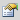

The dynamic template mechanism described in this chapter uses the Auto-Format API of Docmenta. The Auto-Format API allows a developer to implement any kind of transformation. A user can then assign the transformation to a Docmenta style. For details on the Auto-Format API see
Section 2.7.6, “Auto-Format class registration” and the
Auto-Format API JavaDoc documentation. One of the Auto-Format classes that is included in the Docmenta installation, is the class
org.docma.plugin.examples.ApplyTemplate. This chapter describes the usage of this class.
Note that since Docmenta version 1.8, you can transform content by assigning XSLT scripts to styles. This can be achieved by using the Auto-Format class
org.docma.plugin.examples.XSLTAutoFormat. For details on the pre-installed Auto-Format classes see
Chapter 2.8, Auto-Format Class Reference.
As an example we'll create a notebox-style, that uses a dynamic template to define the layout of the notebox. The first step is to create a content-node which holds the notebox-template. When you create a new product, Docmenta initially creates two dynamic template examples with names "
Notebox Example 1" and "
Notebox Example 2". These are located in
 System
System >
Templates >
Auto-Format:
If you have created the product with an older version of Docmenta, then this node may not exist. In this case create a new section-node with name "Auto-Format" as sub-node of the
System >
Templates node.
Note: Though it is recommended to store dynamic templates in the location
System >
Templates >
Auto-Format, it is possible to store the templates at any other location within the product-tree as well.
To continue this tutorial, you can either follow the instructions below to create a new notebox-template from scratch or use one of the already existing example-templates and skip the following instructions.
The notebox-template that we want to create shall have following layout:
This layout can be realized as table with two rows. The first row is the title-line of the note and the second row is for displaying the text of the note. To achieve a different formatting for the title and the content, we have to create two block-styles: one for the first row, which defines a blue background-color and a bold white font, and one for the second row, which defines a grey background-color and a blue border. See
Section 1.3.5, “User-defined styles” on how to create styles. For now we assume, that one style with ID
header_note, which we'll use for the first row, and one style with ID
note_content, which we'll use for the second row, exists.
Note that the styles note_content and header_note shall only be used for our dynamic template, which will be inserted on the fly during export, i.e. these styles shall never be directly applied to content by authors. Therefore, it is recommended to declare these styles as "Hidden". Hidden styles are not listed in the styles-listbox of the content-editor. To hide a style, check the "Hidden" checkbox of the correponding style in the styles workspace:
Now that all the styles needed for the template exist, we can actually create the template, i.e. create a new content-node, e.g. as sub-node of the
System >
Templates >
Auto-Format folder:
To be able to reference this template, assign an alias name to the node, e.g. "
notebox_template". Now, open the created node in the content-editor, e.g. by double-clicking the node. Create a table with one column and two rows (see
Section 1.3.3, “Tables” on how to create tables):
Put the text "Note: $title" in the first row and the text "$content" in the second row of the table. The strings "$title" and "$content" are placeholders and are automatically replaced during export by the title and content of the note.
To assign the styles to the rows, place the cursor in the first row and click the "Table cell properties"

button. In the opened dialog select the style
header_note from the "Class" list:
Do the same for the second row, but this time select the style note_content as cell class. The result should be as follows:
Save the node and close the editor by clicking the "Save & Close" button.
Now that we have finished the template, we need to create one more style, which is to be used by authors to mark content as a note. When you create a new product, Docmenta initially creates an example style with ID "
note". You can use this style for marking content as note. If a style with ID "
note" does not exist, then create a new block-style with this ID as described in
Section 1.3.5, “User-defined styles”. You can set any CSS properties you like for this style. This has actually no impact on the generated output, because the style is to be replaced during export by the template we've just created. However, this style defines the rendering of the content in the content-editor. To follow the tutorial set a light-blue background-color and a top-margin of 8 points for the style with ID "
note":
The non-white background-color is to indicate to the author that he is editing content which will be rendered as notebox.
Last but not least we have to configure, that the style with ID "note" shall be replaced during export by the template with alias name "notebox_template". Therefore, open the style dialog of the note-style and click the "Add" button next to the Auto-Format list:
In the opened dialog, select the Auto-Format class org.docma.plugin.examples.ApplyTemplate from the list and enter the alias name of the template ("notebox_template") in the "Arguments" input field:
Note that as soon as you have selected an Auto-Format class from the list, the panel below the "Arguments" input field shows help on how to use the Auto-Format class.
After having selected the Auto-Format class and having supplied the arguments, click the "Okay" button to close the dialog. The Auto-Format list of the style-dialog should now contain a new entry with the settings you have just entered:
Click "Okay" to close the style-dialog. The note-style can now be used to mark content that shall be rendered as notebox.
If the class org.docma.plugin.examples.ApplyTemplate is not contained in the Auto-Format class list, then ask the administrator to add this class to the application configuration. If you have administrator rights, you can add the class by yourself. To do this, switch to the Administration workspace and select the Auto-Format tab:
Click the "Add" button next to the list. In the opened dialog enter the text "org.docma.plugin.examples.ApplyTemplate":
Click "Okay" to close the dialog. If the class was successfully installed, then you can select the class from the list and the panel below the list shows help on how to use the class:
Now that all the configuration work is done, we can actually use the
note-style to mark content that is to be rendered as notebox. To do this, open a previously created content-node, or create a new content-node and apply the
note-style to one or more paragraphs (i.e. select the paragraphs and then choose the
note-style from the styles-listbox; see
Section 1.3.5, “User-defined styles” on how to apply a block-style to paragraphs):
As you can see, within the content-editor, the paragraphs are formatted with the CSS properties of the note-style. However, when you save the content, the preview of the node shows the content rendered with the template that we've created:
Notice that in the preview, the placeholder "$content" within the template is replaced by the content to which the note-style is assigned. The placeholder "$title" is removed without replacement. The reason for this is, that we have not yet assigned a title to the note content. To assign a title to the note content, you have to select the complete note block within the content-editor. The easiest way to do this, is to place the cursor somewhere within the note content and click on the path element div.note in the status-line of the content-editor:
In some browsers the block-selection via status line does not always work as expected. If you experience some problems, you can use the HTML source editor ( button) to manually set a title-attribute for the block-element to which the note-style is assigned (i.e. the element with the attribute class="note"):
After having selected the note-block, click the "Insert/Edit Attributes"  button. In the opened dialog enter some text in the Title field and click "Okay" to close dialog.
When you save and preview the content, the placeholder "$title" should now be replaced by the entered title value:
If you want to apply a style to a single paragraph, then it's easier to just place the cursor within the paragraph (but outside of any inline-style) and click the "Insert/Edit Attributes" button. In the opened dialog, select note from the "Class" list and optionally enter a title in the "Title" input field:
Close the dialog by clicking "Insert". This directly assigns the style and the title to the element of the current cursor position.
In this section you have seen how to use the Auto-Format class org.docma.plugin.examples.ApplyTemplate for realizing dynamic templates. Following illustration summarizes the concept: